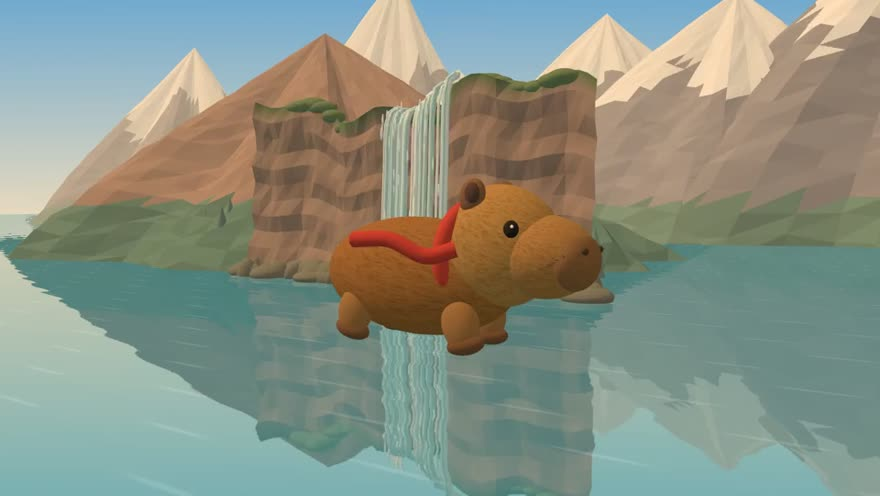
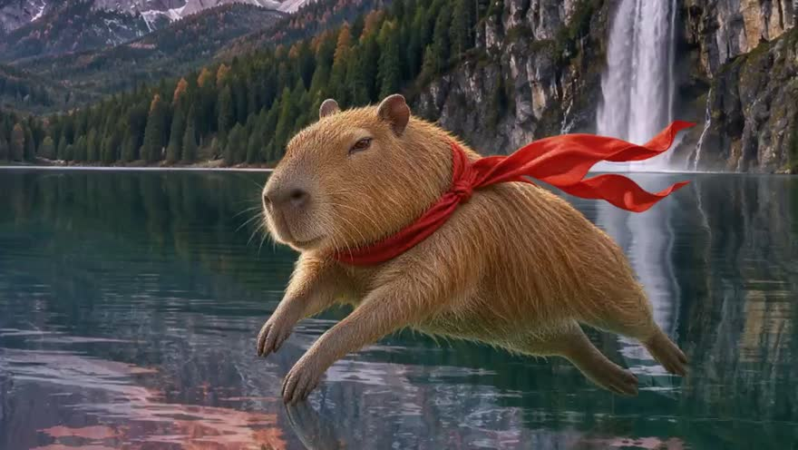
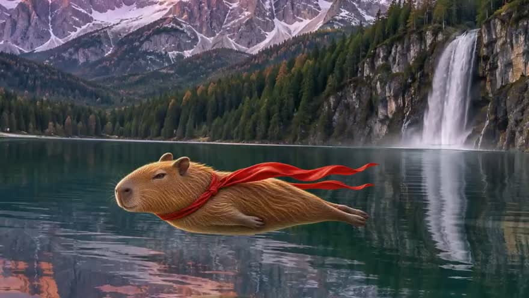
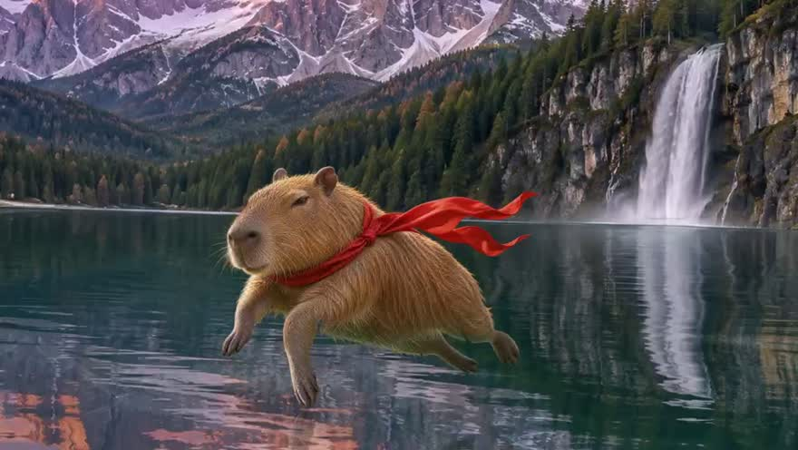

主役をカピバラに

「この動画の飛行機を、カピバラに変えてみて」
雪山と滝を背景に、赤いスカーフのカピバラが登場！ 飛んではいるけれど、湖を見ると、同じ太さの白い筋が並んでいました。
「この飛行機、カピバラに変えたらどうなる？」から始まった25秒の動画です。最初の作品を見て、気になったところをAIに3回伝えました。そのたびに何が変わったか、見比べてみてください😊
9〜12秒に注目。左右の足を交互に動かして、顔が近づくと一度まばたきします。
▶ で完成版を再生。A・B・C・Dを押すと、同じ秒数の別の版に切り替わります。Aは無音です。
実際のやり取りを、短い言葉にまとめました。4枚の写真はどれも10秒の場面です。

「この動画の飛行機を、カピバラに変えてみて」
雪山と滝を背景に、赤いスカーフのカピバラが登場！ 飛んではいるけれど、湖を見ると、同じ太さの白い筋が並んでいました。

「お手本の水は、本当に流れてるみたい。そこをもう一度見て、近づけてみて」
AIがお手本の同じ場面を見直し、遠くの滝と手前の波を別々に動かしました。滝の白い映り込みが、波に合わせてほどけるようになりました。

「まだ宙に浮いて見えるなぁ。飛行機みたいに、風景の中を滑らかに飛べる？」
カピバラが湖を横切る道を決めて、カメラが少し遅れて追うように。足を後ろへそろえると、すっと進む感じが出ました。
ここでAIにも完成前の映像を見直してもらいました。いちばん近づく12秒で鼻先が切れていたので、カメラの位置を直し、もう一度12秒で顔全体が入ることを確認しました。

「ぬいぐるみが浮かんでるみたい。カピバラ自身も、もう少し動ける？」
手前の足を伸ばす間に、奥の足は引っこみます。後ろ足でひと蹴りして、少し力を抜く。耳やまぶたも動いて、同じ25秒に小さな表情が生まれました。
お願いをぜんぶ最初に考えるのは難しいですよね。まず一つ作ってもらうと、「ここは好き」「ここはもう少し」が見えてきます。そのままAIに伝えてみてください。
「赤いスカーフは気に入ったよ。水面が少し固く見えるから、お手本の10秒あたりと見比べて直してみて。できたら、前の版と同じ場面を見せて」